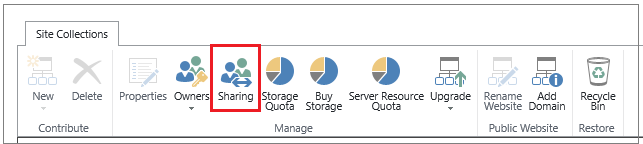

|
<< Click to Display Table of Contents >> Navigation: OnePractice > OnePractice External Client Access > Turn External Sharing Off or On |
You must be a SharePoint Online admin to configure external sharing for individual site collections. Site collection administrators are not allowed to change external sharing configurations.
•From the SharePoint admin center, click site collections.
•Check the box next to those site collections whose sharing settings you want to turn on or off.
•In the ribbon, click Sharing.

Do one of the following:
If you want to: |
Select this option: |
For this result: |
|---|---|---|
Prevent all users on all sites from sharing sites or sharing content on sites with external users. |
Don’t allow sharing outside your organization |
Users will not be able to share sites or content in this site collection with users who do not have licenses to your Office 365 subscription. If sharing was previously turned on for this site collection, any external users who were invited to sign-in and view content on sites in this site collection will be permanently deleted. If you ever plan to turn on external sharing for this site collection again, these external users would need to be re-invited. |
Require external users who have received invitations to view sites or content to sign-in with a Microsoft account before they can access the content. |
Allow external users who accept sharing invitations and sign in as authenticated users |
Site owners or others with full control permission can share sites with external users. Site owners or others with full control permissions on a site can share documents with external users by requiring sign-in. All external users will be required to sign in before they can view content. Invitations to view content can be redeemed only once. After an invitation has been accepted, it cannot be shared or used by others to gain access. |
Allow site users to share sites with people who sign in as authenticated users, but you also want to allow site users to share documents through the use of anonymous guest links, which do not require invited recipients to sign in. |
Allow both external users who accept sharing invitations and guest links |
Site owners or others with full control permissions can share sites with external users. All external users will be required to sign in before they can view content on a site that has been shared. Site owners or others with full control permissions can also share documents externally opt to require sign-in, or send an anonymous guest link for documents. When users share a document, they can grant external users either view or edit permissions to the document. External users who receive anonymous guest links can view or edit that content without signing in. Anonymous guest links could potentially be forwarded or shared with other people, who might also be able to view or edit the content without signing in. |
NOTES
•If external sharing is turned off for the entire SharePoint Online environment, you will not be able to turn it on for specific site collections.
•The external sharing settings for individual site collections cannot be less restrictive than whatever is allowed for the entire SharePoint Online environment, but these settings can be more restrictive. For example, if external sharing is turned on for the entire SharePoint Online environment, but it is limited to allowing only authenticated users, then that will be the only kind of external sharing you can allow in a specific site collection. If external sharing through both sign-in and anonymous guest links is allowed for the entire SharePoint Online environment, you can opt to turn off external sharing entirely for a specific site collection or you can limit external sharing to authenticated users (no guest links).
•If external sharing is turned off globally in the SharePoint Online Admin center, any shared links will stop working. If the feature is later reactivated, these links will resume working. It is also possible to disable individual links that have been shared if you want to permanently revoke access to a specific document.
•If you change the external sharing settings for the My Site site collection, these changes will also apply to any existing or newly created personal sites (formerly called My Sites).
•Sharing settings on the –my site site collection (e.g., https://contoso-my.sharepoint.com) will apply to the OneDrive for Business sites for all users of the organization. You cannot selectively manage sharing for a particular user’s OneDrive for Business site.